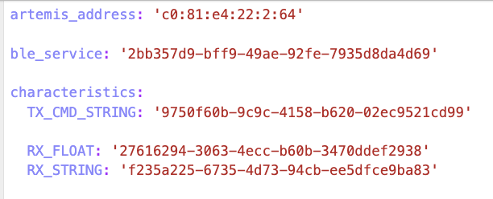
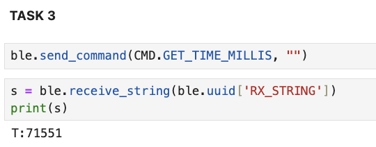

The purpose of Lab 1, was to get familiar with the Artemis Nano board and set-up the ble-controller to allow
communicating with the board via bluetooth. The tasks in this lab also helped in familiarizing me with the various
commands/debugging tools available to set-up communication with the robot.
Lab 1A
Prelab Set-up
To set-up the lab I first downloaded the Arduino IDE and the SparkFun extension. Then I connected to the Artemis
Nano board. After that, I ran some of the example code to test
out uploading and running code on the board. I also got familiar with the Serial Monitor and baud rates.
Task 1
Task 1 was to run the Blink.io program on the Artemis board.
As can be seen in the video, the LED on the Artemis is blinking.
Task 2
Task 2 was to run the Serial program on the Artemis board to get familiar with serial monitor outputs. This task
was to get familiar with UART communication between the board and the computer.
As can be seen in the video, the serial monitor echoes back the word typed in. For this task I had to change the
baud rate to match the one in the code, 115200.
Task 3
Task 3 was to test out the temperature sensor on the Artemis board through the AnalogRead() code.
As can be seen in the video, the temperature readings on the serial monitor increase when I put my hand around the
sensor on the board and are lower when I take my hand off the sensor.
Task 4
Task 4 was to test out the microphone on the Artemis board. I used an online video to play notes of different
frequencies and checked the output in the serial monitor. As seen in the video, the output shows that the
microphone picks up the different frequencies.
Additional 5000-level Tasks
The additional task was to blink the LED on the artmemis whenever a Middle-C note was played. To achieve this
code, I combined the sample blink and PDM codes and modified it such that the LED would blink if a frequency equal
to that of Middle-C is heard. I allowed for small variations by setting the range of detection to 260 to 265 Hz.
(Middle-C is generally considered to be around 262 Hz). As can be seen in the video, the LED only blinks when a
Middle-C is played and not any other note.
Lab 1B
Prelab Set-up
The set-up for this lab involved creating a virtual python environment with the necessary packages for the
class as well as the codebase for the lab tasks.
Next, I set-up jupyter lab to run the lab code and modified the necessary configurations in the connection.yaml
file like the MAC address and UUID, to allow the
artemis board to connect to my laptop. I generated a random UUID in Python to ensure that
my laptops only connect to my board. I then connected my laptop to the board via bluetooth.

ECHO
Task 1 was to set-up the ECHO command to send a string value from our Python script to the artemis board. For this
task I added a prefix to the message echoed back from the artemis, "Robot says: ".
SEND_THREE_FLOATS
Task 2 was SEND_THREE_FLOATS, to send 3 floats from the artemis board back to our Python script.
GET_TIME_MILLIS
For this task I used the millis() function to generate the current time in milliseconds and send back the int
value of the time to the computer with a prefix of "T:". The Python code then receives the string and
prints out the time in milliseconds.

Notfication Handler
For this task, I set up a function in the Python script called "notification_handler" that
automatically receives string data from the board and prints it out. The notification handler converts the
received byte array to a string.
To use the notification handler, the Python
starts a notification using start_notify() and sends the required command to the board using send_command(). The
response is received in the notification_handler function.
This code shows how the notification_handler is used for the GET_TIME_MILLIS command.
Get Time Loop
For this task, I set up a loop in the arduino code that runs for 5 seconds and generate the current time using
the millis() function at every loop iteration. As soon as the data is generated, it is sent back to the python
script in the notification_handler and printed out.
The python code adds each timestamp received to a list and I used the size of this list to count the number of
timestamps received. I then used this value to calculate the effective data transfer rate.
In 5 seconds, 615 integer timestamps were received. An integer takes 4 bytes.
Therefore, the effective data transfer rate is (615 * 4) / 5 = 492 bytes/sec
SEND_TIME_DATA
Now, instead of sending the timestamps back to the computer as soon as they are generated, I first store all the
timestamps in an array. This array is defined globally and set to a size of 1000. I then run a loop for 5 seconds
and fill this array with the generated timestamps. Once the array is filled up the data is then sent to the
computer all at once in bulk.
GET_TEMP_READINGS
This task was similar to the one above but instead of collecting only time data. I also collected temp data using
getTempDegF(), and stored the generated temperatures in another global array of size 1000. This data was then sent
back with the time data in bulk. Each temperature reading in the temp array had a corresponding timestamp in the
time array.
The Python code displayed the data as timestamp * temperature reading.
DISCUSSION
The above two methods have their own uses and advantages/disadvantages.
The first method enables real-time transfer and use of data from the robot which could be advantageous in
situations where real-time analysis is required and where slower data computation would be acceptable. On the
other hand, the second method with the array is faster and allows data transfer at a much
faster rate than even 1 timestamp per second. By storing the data first and then sending it as a batch, this
method avoids the issue of real-time transmission delays and potential data loss. The choice of method will be use
case dependent.
In terms of data storage capacity, the Artemis board has 384 kB of RAM.
Since we are sending our data in floats/ints which take 4 bytes each, approx 96000 data points can be stored
before the Artemis runs out memory. If both
time and temperature readings are recorded simultaneously, this number is halved to 48,000 data pairs. This number
would also probably be lesser since the data is transmitted as a string which takes more bytes.
Additional 5000-level Tasks
The additional tasks involved measuring the performance of data transfer between the board and computer by testing
out different reply sizes. To test this out, I wrote a loop that sends messages of different byte sizes and
calculated the time between sending the message and receiving it.
The performance data shows that smaller size replies like 5 bytes result in much lower data rates due to the
significant
impact of overhead, which could include fixed delays/protocal related delays. Larger reply sizes such as 120
bytes, reduces the impact of this overhead by spreading fixed costs across more data, achieving higher data
rates. The plot shown below highlights this trend: as the reply size increases, the effective data rate improves
significantly. However, the choice of reply size depends on the trade-off between latency (faster acknowledgments
with smaller packets) and throughput (higher efficiency with larger packets). For bulk data transfers, using
larger reply sizes would probably be more beneficial to performance.
I also tested the reliability of the system using the SEND_TIME_DATA function and checking to ensure that no data
from the array is lost in transmission. As seen, all messages are received by the python script.
Conclusion
This lab was very useful in getting familiar with running code on the Artermis board and getting familiar with the
different methods of interacting with and sending/receiving data between our computer and the robot. This will be
very useful in future labs where performance of the robot is crucial and it is important to pick the best method
of communication.